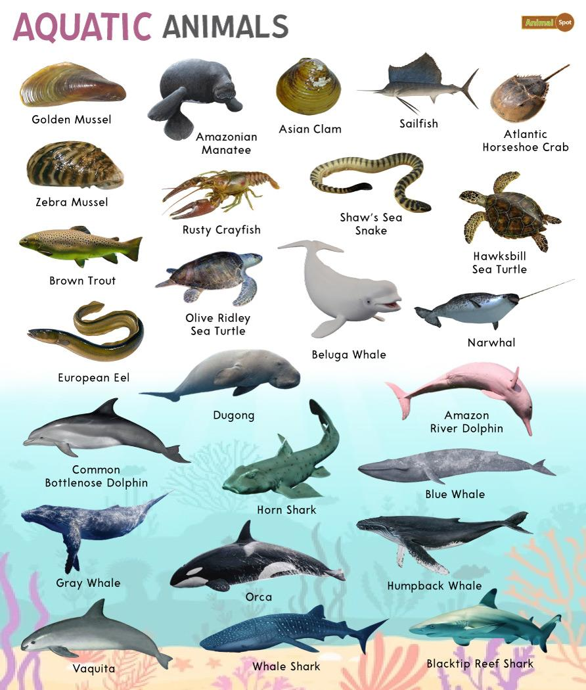

Aquatic Animals

Aquatic animals are species that live primarily or entirely in water. They inhabit a range of environments from the vast depths of the oceans to freshwater rivers and lakes. Adaptations to aquatic life vary significantly among different species, allowing them to thrive in diverse aquatic environments. These adaptations include physiological and anatomical changes that help these animals navigate, feed, reproduce, and survive in water.
Key Characteristics
- 1. Respiration: Aquatic animals have evolved various ways to extract oxygen from water. Fish, for instance, use gills to absorb oxygen dissolved in water, while marine mammals like whales and dolphins have lungs and must surface periodically to breathe air.
- 2. Locomotion: Many aquatic animals, such as fish and cetaceans (whales, dolphins), have streamlined bodies to reduce resistance while moving through water. Fins and tails are also adapted to increase mobility and maneuverability.
- 3. Buoyancy: Many species have adaptations to manage buoyancy. Fish regulate their depth using swim bladders, which they can fill or empty of gas as needed. Sharks, lacking swim bladders, use a large oily liver to enhance buoyancy.
Classification
- Fish: This class includes a vast range of species, from tiny minnows to large sharks. They are primarily characterized by their gills, scales, and finned structures.
- Mollusks: Including clams, oysters, snails, and cephalopods like octopuses and squids. Mollusks are known for their soft bodies, which in many cases are protected by a hard shell.
- Crustaceans: Such as crabs, lobsters, and shrimp, these are primarily distinguished by their hard exoskeleton, jointed limbs, and segmented body structure
Habitat and Adaptations
Aquatic animals are integral to their ecosystems. They play varied roles, including:
- Predators: Many species, like sharks and orcas, top the food chain and help maintain the balance of marine ecosystems.
- Prey: Smaller fish and zooplankton serve as food for larger species, crucial for transferring energy up the food chain.
- Ecosystem Engineers: Creatures like corals build reefs that provide habitat for many other species, while beavers create wetlands by damming rivers.
Conservation Issues
Ecological and Economic Importance
Conservation Issues
Aquatic ecosystems face numerous threats including pollution, overfishing, climate change, and habitat destruction. Coral reefs are particularly vulnerable to ocean acidification and warming temperatures. Conservation efforts are vital and include marine protected areas, sustainable fishing practices, and pollution control measures.